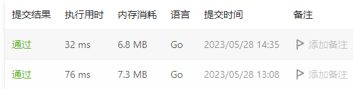

每日一题
没遇到什么头疼的问题
知识点遗忘
学到新东西了
头疼，难
2023
6 月
2475. 数组中不等三元组的数目 回溯`
// 思路1 回溯
func unequalTriplets(nums []int) int {
ans := 0
state := State{
set: make(map[int]struct{}),
cnt: 0,
}
unequalTripletsHelper(state, nums, &ans)
return ans
}
type State struct {
set map[int]struct{}
cnt int
}
func unequalTripletsHelper(state State, choices []int, ans *int) {
if len(state.set) == 3 && len(state.set) == state.cnt {
*ans++
return
}
for i, num := range choices {
// cut
if len(state.set) >= 3 {
return
}
// try
state.set[num] = struct{}{}
state.cnt++
if len(state.set) != state.cnt {
//delete(state.set, num)
state.cnt--
continue
}
unequalTripletsHelper(state, choices[i+1:], ans)
// back
delete(state.set, num)
state.cnt--
}
}
5 月
6455. 使所有字符相等的最小成本
// if s[i] != s[i-1] 需要反转
//
// #1. 反转 s[:i]
// #2. 反转 s[i:]
//
// 选择较小的反转方式
// 无论是 #1 还是 #2 的反转方式，i 与 i+1 两个位置的字符是「一起变化」或者「不变化」
// 因此无需实际反转字符串
func minimumCost(s string) int64 {
ans, n := int64(0), len(s)
for i := 1; i < n; i++ {
if s[i] != s[i-1] {
ans += int64(Min(i, n-i))
}
}
return ans
}
func Min(a, b int) int {
if a < b {
return a
}
return b
}
6440. 对角线上不同值的数量差 DP
func differenceOfDistinctValues(grid [][]int) [][]int {
m := len(grid)
n := len(grid[0])
// dp1、dp2 分别表示左上角、右下角对角线上的元素集合
dp1 := make([][]map[uint8]struct{}, m)
dp2 := make([][]map[uint8]struct{}, m)
ans := make([][]int, m)
for i := 0; i < m; i++ {
dp1[i] = make([]map[uint8]struct{}, n)
dp2[i] = make([]map[uint8]struct{}, n)
ans[i] = make([]int, n)
}
for r1, r2 := 0, m-1; r1 < m; {
for c1, c2 := 0, n-1; c1 < n; {
dp1[r1][c1] = map[uint8]struct{}{}
dp2[r2][c2] = map[uint8]struct{}{}
// 左上角元素是否存在
if r1-1 >= 0 && c1-1 >= 0 {
// 当前元素加入集合
deepCopyMap(dp1[r1][c1], dp1[r1-1][c1-1])
}
dp1[r1][c1][uint8(grid[r1][c1])] = struct{}{}
// 右下角元素是否存在
if r2+1 < m && c2+1 < n {
deepCopyMap(dp2[r2][c2], dp2[r2+1][c2+1])
}
dp2[r2][c2][uint8(grid[r2][c2])] = struct{}{}
c1++
c2--
}
r1++
r2--
}
for r := 0; r < m; r++ {
for c := 0; c < n; c++ {
x, y := 0, 0
if (r-1 >= 0 && c-1 >= 0) && (r+1 < m && c+1 < n) {
x, y = len(dp1[r-1][c-1]), len(dp2[r+1][c+1])
} else if r+1 < m && c+1 < n {
// 上面一排，左边一列
y = len(dp2[r+1][c+1])
} else if r-1 >= 0 && c-1 >= 0 {
x = len(dp1[r-1][c-1])
}
ans[r][c] = abs(x, y)
}
}
return ans
}
func abs(x, y int) int {
if x < y {
return y - x
}
return x - y
}
func deepCopyMap(m1, m2 map[uint8]struct{}) {
for k := range m2 {
m1[k] = struct{}{}
}
}
优化：可以按列遍历，每一列使用一个 map 来作为集合保存元素
func differenceOfDistinctValues(grid [][]int) [][]int {
// 根据对角线来遍历
// 设从 (0,0) 开始的对角线左下方为 区域 1，其他为区域 2
m := len(grid)
n := len(grid[0])
dp1 := make([][]uint8, m)
dp2 := make([][]uint8, m)
ans := make([][]int, m)
for i := 0; i < m; i++ {
dp1[i] = make([]uint8, n)
dp2[i] = make([]uint8, n)
ans[i] = make([]int, n)
}
// 先遍历区域 1 的情况
// l 表示一条对角线的 r 起点
for l := m - 1; l > 0; l-- {
set1 := make(map[uint8]struct{})
r, c := l, 0
for ; r < m && c < n; r, c = r+1, c+1 {
dp1[r][c] = uint8(len(set1))
set1[uint8(grid[r][c])] = struct{}{}
}
// 倒序遍历，统计右下角的情况
set1 = nil
set2 := make(map[uint8]struct{})
for r2, c2 := r-1, c-1; r2 >= l && c2 >= 0; r2, c2 = r2-1, c2-1 {
dp2[r2][c2] = uint8(len(set2))
set2[uint8(grid[r2][c2])] = struct{}{}
}
}
// 区域2
// l 表示一条对角线 c 的起点
for l := 0; l < n; l++ {
set1 := make(map[uint8]struct{})
r, c := 0, l
for ; r < m && c < n; r, c = r+1, c+1 {
dp1[r][c] = uint8(len(set1))
set1[uint8(grid[r][c])] = struct{}{}
}
// 倒序遍历，统计右下角的情况
set1 = nil
set2 := make(map[uint8]struct{})
for r2, c2 := r-1, c-1; r2 >= 0 && c2 >= l; r2, c2 = r2-1, c2-1 {
dp2[r2][c2] = uint8(len(set2))
set2[uint8(grid[r2][c2])] = struct{}{}
}
}
for r := 0; r < m; r++ {
for c := 0; c < n; c++ {
ans[r][c] = abs(int(dp1[r][c]), int(dp2[r][c]))
}
}
return ans
}

22. 括号生成 树、回溯
使用二叉树前序遍历的方法
func generateParenthesis(n int) []string {
var path []byte
ans := make([]string, 0)
dlr(path, '(', n, &ans)
return ans
}
func dlr(path []byte, ch byte, n int, ans *[]string) {
// 访问节点
path = append(path, ch)
if len(path) == n*2 {
if isValid(path) {
*ans = append(*ans, string(path))
}
return
}
dlr(path, '(', n, ans)
dlr(path, ')', n, ans)
return
}
func isValid(pat []byte) bool {
var stack []byte
for i := 0; i < len(pat); i++ {
if len(stack) != 0 && stack[len(stack)-1] == '(' && pat[i] == ')' {
stack = stack[:len(stack)-1]
} else {
stack = append(stack, pat[i])
}
}
return len(stack) == 0
}
这样做会导致一些不必要的工作,假设当 n = 2,可以看成这样一棵二叉树

总共会走 2^(2n-1) = 8 条路径,但是只有 2 条是符合条件的
可以发现一些规律:
- 如果左括号等于 n 了,之后就只能选择右括号
- 如果目前的状态中,左括号的数量比右括号少,那么一定是不符合条件的,因为最后一定有一个左括号是没有右括号匹配的,所以如果现在的右括号等于左括号,那么下一个只能选择左括号
优化的代码:
1679. K 和数对的最大数目 双指针
547. 省份数量 图、DFS
func findCircleNum(isConnected [][]int) int {
n := len(isConnected)
visited := map[int]struct{}{}
cnt := 0
for i := 0; i < n; i++ {
if _, ok := visited[i]; ok {
continue
}
graphDFS(isConnected, i, visited)
cnt++
}
return cnt
}
func graphDFS(graph [][]int, start int, visited map[int]struct{}) {
visited[start] = struct{}{}
for adj, iscon := range graph[start] {
if _, ok := visited[adj]; ok || adj == start || iscon == 0 {
continue
}
graphDFS(graph, adj, visited)
}
}
216. 组合总和 III 回溯
// 剪枝条件：当前的和 > n | 当前的数量 > k
func combinationSum3(k int, n int) [][]int {
state := &State {
sum: 0,
}
choices := make([]int, 9)
for i := 1; i <= 9; i++ {
choices[i-1] = i
}
var ans [][]int
sumkHelper(state, n, k, choices, &ans)
return ans
}
type State struct {
sum int
nums []int
}
func sumkHelper(state *State, n, k int, choices []int, ans *[][]int) {
/*判断当前是否符合解的条件*/
if state.sum == n && len(state.nums) == k {
tmp := make([]int, k)
copy(tmp, state.nums)
*ans = append(*ans, tmp)
return
}
for i, choice := range choices {
/*剪枝*/
if state.sum > n || len(state.nums) > k {
return
}
if state.sum + choice > n {
break
}
// 尝试
state.sum += choice
state.nums = append(state.nums, choice)
sumkHelper(state, n, k, choices[i+1:], ans)
// 回退
state.sum -= choice
state.nums = state.nums[:len(state.nums)-1]
}
}
↑ 开始使用分类记录
code
func letterCombinations(digits string) []string {
if digits == "" {
return []string{}
}
var state []byte
digitsBs := []byte(digits)
var ans []string
helper(&state, digitsBs, &ans)
return ans
}
var number2chs = map[int][]byte{
2: {'a', 'b', 'c'},
3: {'d', 'e', 'f'},
4: {'g', 'h', 'i'},
5: {'j', 'k', 'l'},
6: {'m', 'n', 'o'},
7: {'p', 'q', 'r', 's'},
8: {'t', 'u', 'v'},
9: {'w', 'x', 'y', 'z'},
}
func helper(state *[]byte, digits []byte, ans *[]string) {
/*检查是否符合解的条件*/
if len(digits) == 0 {
*ans = append(*ans, string(*state))
return
}
num, _ := strconv.Atoi(string(digits[0]))
choices := number2chs[num]
for _, choice := range choices {
/*没有剪枝条件*/
//if !() {
// continue
//}
/*尝试*/
*state = append(*state, choice)
helper(state, digits[1:], ans)
/*回退*/
*state = (*state)[:len(*state)-1]
}
}
code
//将 s 分割成回文字符串
//
//将 s 分成两个部分
//- 第一个字符一定是回文，剩下的字符串为 si（子问题求解）
//- 第二个回文，剩下的字符串子问题求解
//- …
//- 当 s 占据左边部分，结束
func partition(s string) [][]string {
var palindromes []string
var ans [][]string
partitionHelper(s, &palindromes, &ans)
return ans
}
// 通过 i 将 s 划分成两部分：s[:i] s[i:]
// 刚开始的时候 i 应该为 1，即左边只有一个字符
// 当 s 为空当时候结束
func partitionHelper(s string, palindromes *[]string, ans *[][]string) {
n := len(s)
if n == 0 {
tmp := make([]string, len(*palindromes))
copy(tmp, *palindromes)
*ans = append(*ans, tmp)
return
}
for cut := 1; cut <= n; cut++ {
if isPalindrome(s[:cut]) {
*palindromes = append(*palindromes, s[:cut])
partitionHelper(s[cut:], palindromes, ans)
*palindromes = (*palindromes)[:len(*palindromes)-1]
}
}
}
// 判断字符串是否回文 O(m)
func isPalindrome(s string) bool {
n := len(s)
switch n {
case 0, 1:
return true
case 2, 3:
return s[0] == s[n-1]
}
for i := 0; i < n/2; i++ {
if s[i] != s[n-i-1] {
return false
}
}
return true
}
code
// 寻找路径
// 思路1 使用 DFS，当「节点是最后一个节点」或者「没有下一个节点」的时候回溯
func allPathsSourceTarget(graph [][]int) [][]int {
var path []int
var ans [][]int
dfsHelper(graph, 0, &path, &ans)
return ans
}
func dfsHelper(graph [][]int, startVt int, path *[]int, ans *[][]int) {
// 标记为已访问
*path = append(*path, startVt)
for _, toVt := range graph[startVt] {
if startVt == len(graph)-1 {
break
}
/* 因为一个节点可能存在与多条不同的路径中，不需要标记节点是否访问过 */
//if _, ok := visited[toVt]; ok {
// continue
//}
dfsHelper(graph, toVt, path, ans)
}
// 抵达终点，保存路径
// 注意不能将 *path 直接放入 ans 中，这会导致 ans 中只保存最后一条路径
if startVt == len(graph)-1 {
tmpPath := make([]int, len(*path))
copy(tmpPath, *path)
*ans = append(*ans, tmpPath)
}
*path = (*path)[:len(*path)-1]
}
code
// 数组从后往前遍历
// 使用一个栈保存温度的下标
// 如果当前温度 >= 栈顶的温度 --》出栈
// 否则 --》 入栈
func dailyTemperatures(temperatures []int) []int {
var stack []int
var ans []int
n := len(temperatures)
if n == 0 {
return ans
}
stack = append(stack, n-1)
ans = append(ans, 0)
for i := n-2; i >= 0; i-- {
t := temperatures[i]
for len(stack) != 0 && t >= temperatures[stack[len(stack)-1]] {
stack = stack[:len(stack)-1]
}
if len(stack) == 0 {
ans = append(ans, 0)
} else {
ans = append(ans, stack[len(stack)-1] - i)
}
stack = append(stack, i)
}
for i := 0; i < n/2; i++ {
ans[i], ans[n-i-1] = ans[n-i-1], ans[i]
}
return ans
}
code
// 核心步骤：
// 子问题1. num, num*num 字符串是否满足：存在一种分割情况，使得 a+b+...+x = num
//
//
// notice: n<=1000， n*n <=1000 000
// num：从 1 到 100 0000 的数是否符合子问题1是固定的！
//
// 1 9 10 36
// 1 81 100 1296
//
//
// 谈论 36 的情况， 分割 1 ，子问题是：296 能否分割成36-1=35 --》 可以用递归来实现这个子问题
func punishmentNumber(n int) int {
ans := 0
for i := 1; i <= n; i++ {
if expectN(i, strconv.Itoa(i*i)) {
ans += i * i
}
}
return ans
}
// 用来解决子问题1
// squ 是否存在分割情况，使得各部分的和 == num
func expectN(num int, squ string) bool {
if squ == "" {
return false
}
squN, _ := strconv.Atoi(squ)
if num == squN {
return true
}
for i := 1; i < len(squ); i++ {
a, _ := strconv.Atoi(squ[:i])
if expectN(num-a, squ[i:]) {
return true
}
}
return false
}
code
func wordBreak(s string, wordDict []string) bool {
n := len(s)
dp := make([]int, n)
for i := 0; i < n; i++ {
for _, word := range wordDict {
m := len(word)
if i-m+1 < 0 {
continue
}
if s[i-m+1:i+1] == word && i-m+1 == 0 {
dp[i] = 1
break
} else if s[i-m+1:i+1] == word && dp[i-m] == 1 {
dp[i] = 1
break
}
}
}
return dp[n-1] == 1
}
code
// 使用数组 cnt[i] 来保存 i 数值是否在某个区间里面，
// 比如 [1,6] [2,7] 那么 cnt[3] = 2 表示在两个区间里面
//
// 思路2. 按区间的左值从小到达排列，
// 如果当前区间的右值>=下一个区间的左值，说明有重叠
// 可能有三种种情况1. [1,3] [2,6] --> 这种情况可以直接把 2 改成 1
// 2. [1,6] [2,3] --> 这种情况把 2 改成 1，把 3 改成 6
// 3. [1,2] [3,4] --> 没有重叠，没有重叠的情况就把当前的区间加入结果集
func merge(intervals [][]int) [][]int {
var ans [][]int
sort.Slice(intervals, func(i, j int) bool {
return intervals[i][0] < intervals[j][0]
})
for i := 0; i < len(intervals) - 1; i++ {
if intervals[i][1] < intervals[i+1][0] {
ans = append(ans, intervals[i])
} else if intervals[i][1] >= intervals[i+1][0] && intervals[i][1] < intervals[i+1][1] {
intervals[i+1][0] = intervals[i][0]
} else if intervals[i][1] >= intervals[i+1][1] {
intervals[i+1] = intervals[i]
}
}
ans = append(ans, intervals[len(intervals) - 1])
return ans
}
code
// start end
// x x x x x x x x x x x x
// 假设 end 为这个连续子数组的终点
// start 为起点
// pre[i] 为前缀和，pre[0] = nums[0]
// 求：pre[end] - pre[start-1] = k
// end 遍历 nums，此时 pre[end]，k 已知，只需要找到前面有几个 pre[i] 等于 pre[end] - k 即可
func subarraySum(nums []int, k int) int {
preCnt := map[int]int{}
// pre := make([]int, len(nums))
pre := 0
cnt := 0
preCnt[0] = 1
for end := 0; end < len(nums); end ++ {
pre += nums[end]
cnt += preCnt[pre - k]
// 统计前缀和出现的次数
preCnt[pre]++
}
return cnt
}
code
func findAnagrams(s string, p string) []int {
var ans []int
m, n := len(p), len(s)
if m > n {
return ans
}
var pCnt, sCnt [26]int
for i := range p {
pCnt[p[i]-'a'] ++
sCnt[s[i]-'a'] ++
}
if sCnt == pCnt {
ans = append(ans, 0)
}
for i := m; i < n; i++ {
sCnt[s[i]-'a']++
sCnt[s[i-m]-'a']--
if sCnt == pCnt {
ans = append(ans, i-m+1)
}
}
return ans
}
code
func threeSum(nums []int) [][]int {
// 先将数组从小到达排序
sort.Ints(nums)
n := len(nums)
var ans [][]int
lastA := nums[0] - 1
for i := 0; i < n; i++ {
// 如果第一个数跟上一次循环的数一致，跳过该循环
cIdx := n - 1
if nums[i] == lastA {
continue
}
// 第二个数在往后寻找的时候
// 如果下一个数跟上一个数相同，也应该跳过，否则会出现重复的三元组
lastB := nums[0] - 1
for j := i + 1; j < cIdx; j++ {
if lastB == nums[j] {
continue
}
for ; cIdx > j; cIdx-- {
sum := nums[i] + nums[j] + nums[cIdx]
if sum < 0 {
// 如果和小于0，不必继往前遍历找第三个数
// 让第二个数增大，才有可能让 sum 为零
break
} else if sum == 0 {
elem := []int{nums[i], nums[j], nums[cIdx]}
ans = append(ans, elem)
break
}
}
lastB = nums[j]
}
lastA = nums[i]
}
return ans
}
code
func maxArea(height []int) int {
l, r := 0, len(height) - 1
ans := math.MinInt
for l < r {
ans = max(ans, (r-l) * min(height[l], height[r])) // calc area
if height[l] < height[r] {
l++
} else {
r--
}
}
return ans
}
func max(a, b int) int {
if a < b {
return b
}
return a
}
func min(a, b int) int {
if a < b {
return a
}
return b
}
code
// 思路1. 排序 + 双指针
// o(nlogn) + o(n)
//
// 如何在 o(n) 时间复杂度之内完成？
// 先遍历一遍，把 num 都放入map ，用来标记数组中存在这个数(appeared)
// 再遍历一遍，如果该数能够作为数组的起点，就持续 +1 直到数组中不存在这个数，记录长度
// 前面使用 o(n) 空间复杂度来换取了 o(1) 的查找效率，最差情况下也就是整个数组不连续，也是 o(n)
func longestConsecutive(nums []int) int {
if len(nums) == 0 {
return 0
}
appeared := map[int]bool{}
for _, num := range nums {
appeared[num] = true
}
maxLen := math.MinInt
for _, num := range nums {
if !appeared[num-1] {
cnt := 0
for appeared[num] {
num++
cnt++
}
maxLen = max(maxLen, cnt)
}
}
return maxLen
}
func max(a, b int) int {
if a < b {
return b
}
return a
}
code
//
// 思路1. 遍历 n，每个字符串都判断是否是 s 的子串， 如果使用 kmp 算法，时间复杂度是 s 的长度 m
// o(n * m) * 数字转二进制字符串的时间
// n's max = 1000000000 n * 每个数字转二进制的时间应该很长，再加上匹配的时间可能会超时
// 假设 n
// 15:1111 如果是子串，那么 111、11、1 都是子串 15 7 3 1
// 14:1110 如果是子串，那么 110、10、0 都是子串
// 13:1101 如果是子串，那么 101、1 都是子串
// 12:1100 ..
// 11:1011
// 10:1010
// 9:1001
// ...
// 1:0001
//
// 思路2. 通过上面的分析可以找到一种优化
// 从最大的数开始比较，如果这个数符合，那么持续右移(/2)，放入一个符合条件的 map，
// 遍历的时候如果这个数已经被放入 map，就跳过
func queryString(s string, n int) bool {
set := map[int]bool{}
for num := n; num >= 1; num-- {
if _, ok := set[num]; ok {
continue
}
binaryStr := strconv.FormatInt(int64(num), 2)
if kmp(s, binaryStr) {
tmpNum := num
for tmpNum > 0 {
set[tmpNum] = true
tmpNum /= 2
}
} else {
return false
}
}
return len(set) == n
}
// i
// s
// pat
// j
func kmp(s, pat string) bool {
n, m := len(s), len(pat)
i, j := 0, 0
next := getNext(pat)
for i < n && j < m {
for j > 0 && pat[j] != s[i] {j = next[j-1]}
if pat[j] == s[i] {
j++
}
i++
}
return j == m
}
// i
// a a b a a c a a f
// j
// 0 1 0 1 2
func getNext(pat string) []int {
i, j, n := 1, 0, len(pat)
next := make([]int, n)
next[0] = 0
for i < n {
for j > 0 && pat[j] != pat[i] {j = next[j-1]}
if pat[i] == pat[j] {
j++
}
next[i] = j
i++
}
return next
}
code
// // -> /
// /./ -> 直接把刚入栈的 . 去除
// /../ -> 回退到上一个 /
//
// /.../ -> 视作合法
func simplifyPath(path string) string {
var st []byte
// 因为这个方法都是以 '/' 来判断往前回退，所以在最后补充一个 '/'
// 保证字符串以 '/' 结尾
path += "/"
for i := range path {
if len(st) == 0 || path[i] != '/' {
st = append(st, path[i])
} else {
// len(st) > 0
// path[i] == '/'
top := len(st) - 1
sec := top - 1
thr := sec - 1
if st[top] == '/' {
// //
// nothing to do
// dont push this '/'
} else if sec >= 0 && string(st[sec:]) == "/." {
st = st[:len(st)-1]
} else if thr >= 0 && string(st[thr:]) == "/.." {
// ../
for st[len(st)-1] != '/' {
st = st[:len(st)-1]
}
// 如果此时 len(st) == 1
// 说明已经是根目录 / 无法继续往上找目录，到此结束
// 如果此时 len(st) > 1
// 也就说明前面还有目录 xxxxa/
// 需要继续往前找到一个 '/'
if len(st) > 1 {
st = st[:len(st)-1]
for st[len(st)-1] != '/' {
st = st[:len(st)-1]
}
}
} else {
st = append(st, path[i])
}
}
}
if len(st) != 1 && st[len(st)-1] == '/' {
return string(st[:len(st)-1])
}
return string(st)
}
code
func groupAnagrams(strs []string) [][]string {
group := map[string][]string{}
for _, s := range strs {
bs := []byte(s)
sort.Slice(bs, func(i, j int) bool {
return bs[i] < bs[j]
})
group[string(bs)] = append(group[string(bs)], s)
}
var ans [][]string
for _, v := range group {
ans = append(ans, v)
}
return ans
}
code
func numOfMinutes(n int, headID int, manager []int, informTime []int) int {
g := map[int][]int{}
for i, m := range manager {
g[m] = append(g[m], i)
}
var dfs func(int) int
dfs = func(cur int) (res int) {
for _, neighbor := range g[cur] {
res1 := dfs(neighbor)
if res1 > res {
res = res1
}
}
return informTime[cur] + res
}
return dfs(headID)
}
code
func firstCompleteIndex(arr []int, mat [][]int) int {
m, n := len(mat), len(mat[0])
lineCnt := make([]int, m)
colCnt := make([]int, n)
num2idx := make([]int, 100001)
preI, preJ := 0, 0
for i, num := range arr {
idx := num2idx[num]
// not exists
if idx == 0 {
LOOP:
for _i := preI ; _i < m; _i++ {
_j := 0
if _i == preI {
_j = preJ
}
for ; _j < n; _j++ {
num2idx[mat[_i][_j]] = n * _i + _j
if mat[_i][_j] == num {
preI = _i
preJ = _j
idx = num2idx[num]
break LOOP
}
}
}
}
row := idx/n
col := idx%n
lineCnt[row] ++
colCnt[col]++
if lineCnt[row] == n {
return i
}
if colCnt[col] == m {
return i
}
}
return -1
}
code
func powerfulIntegers(x int, y int, bound int) []int {
var ans []int
appeared := make([]int, bound + 1)
if bound >= 2 {
ans = append(ans, 2)
appeared[2] = 1
}
if x == 1 && y == 1 {
return ans
}
if x == 1 || y == 1 {
notOne := x
if x == 1 {
notOne = y
}
z := 1
for j := 0; ; j++ {
sum := 1 + z * notOne
z *= notOne
if sum > bound {
return ans
}
if appeared[sum] == 1 {
continue
}
ans = append(ans, sum)
appeared[sum] = 1
}
}
xx, yy := 1, 1
iMax := 0
for i := 0; ; i++ {
sum := xx * x + yy // x^ + y^0
xx *= x
if sum > bound {
iMax = i + 1
break
}
if appeared[sum] == 1 {
continue
}
ans = append(ans, sum)
appeared[sum] = 1
}
xx, yy = 1, 1
for i := 0; i < iMax; i++ {
for j := 1; ; j++ {
sum := power(x, i) + power(y, j)
if sum > bound {
break
}
if appeared[sum] == 1 {
continue
}
ans = append(ans, sum)
appeared[sum] = 1
}
}
return ans
}
func power(x, i int) int {
if x == 1 {
return 1
}
if i == 0 {
return 1
}
xx := 1
for i > 0 {
xx *= x
i--
}
return xx
}
code
/**
* Definition for a binary tree node.
* type TreeNode struct {
* Val int
* Left *TreeNode
* Right *TreeNode
* }
*/
func pathSum(root *TreeNode, targetSum int) [][]int {
var st []*TreeNode
var ans [][]int
if root == nil {
return ans
}
tmpRoot := root
pre := root
for len(st) > 0 || tmpRoot != nil {
for tmpRoot != nil {
st = append(st, tmpRoot)
tmpRoot = tmpRoot.Left
}
tmpRoot = st[len(st)-1]
if tmpRoot.Right == nil || tmpRoot.Right == pre {
// visit
if tmpRoot.Left == nil && tmpRoot.Right == nil {
sum := 0
var path []int
for _, node := range st {
sum += node.Val
path = append(path, node.Val)
}
if sum == targetSum {
ans = append(ans, path)
}
}
st = st[:len(st)-1]
pre = tmpRoot
tmpRoot = nil
} else {
tmpRoot = tmpRoot.Right
}
}
return ans
}
code
/**
* Definition for a binary tree node.
* type TreeNode struct {
* Val int
* Left *TreeNode
* Right *TreeNode
* }
*/
func rightSideView(root *TreeNode) []int {
var ans []int
if root == nil {
return ans
}
var st []*TreeNode
tmpNode := root
pre := root
for len(st) > 0 || tmpNode != nil {
for tmpNode != nil {
st = append(st, tmpNode)
if len(st) > len(ans) {
ans = append(ans, tmpNode.Val)
}
tmpNode = tmpNode.Right
}
// 判断是否该访问该节点
tmpNode = st[len(st)-1]
if tmpNode.Left == nil || tmpNode.Left == pre {
pre = tmpNode
tmpNode = nil
st = st[:len(st)-1]
} else {
tmpNode = tmpNode.Left
}
}
return ans
}
code
/**
* Definition for a binary tree node.
* type TreeNode struct {
* Val int
* Left *TreeNode
* Right *TreeNode
* }
*/
// 通过树的先序遍历
// 补充树的每个节点，让度为2，输出树的先序遍历
// 判断主树的序列包含子树的序列
func isSubtree(root *TreeNode, subRoot *TreeNode) bool {
nums1 := dlrNums(root)
nums2 := dlrNums(subRoot)
return kmpSearch(nums1, nums2)
}
const lrNilVal = -10001
var leftNilNode = TreeNode{
Val: lrNilVal,
}
var rightNilNode = TreeNode{
Val: lrNilVal,
}
func dlrNums(root *TreeNode) []int {
var nums []int
if root == nil {
return nums
}
var st []*TreeNode
st = append(st, root)
tmpRoot := root
for len(st) > 0 {
// pop
tmpRoot = st[len(st) - 1]
st = st[:len(st) - 1]
// visit
nums = append(nums, tmpRoot.Val)
if tmpRoot.Val != lrNilVal && tmpRoot.Left == nil {
tmpRoot.Left = &leftNilNode
}
if tmpRoot.Val != lrNilVal && tmpRoot.Right == nil {
tmpRoot.Right = &rightNilNode
}
if tmpRoot.Right != nil {
st = append(st, tmpRoot.Right)
}
if tmpRoot.Left != nil {
st = append(st, tmpRoot.Left)
}
}
return nums
}
// i
// nums a a b a a b a a c
// pat
// j
func kmpSearch(nums, pat []int) bool {
next := getNext(pat)
j := 0
for i := 0; j < len(pat) && i < len(nums); i++ {
for ; j > 0 && nums[i] != pat[j]; j = next[j-1]{}
if nums[i] == pat[j] {
j++
}
}
return j == len(pat)
}
func getNext(pat []int) []int {
next := make([]int, len(pat))
next[0] = 0
for l, j := 0, 1 ; j < len(pat); j++ {
for l > 0 && pat[l] != pat[j] {l = next[l-1]}
if pat[l] == pat[j] {
l++
}
next[j] = l
}
return next
}
code
/**
* Definition for a Node.
* type Node struct {
* Val int
* Left *Node
* Right *Node
* Next *Node
* }
*/
func connect(root *Node) *Node {
if root == nil {
return root
}
// 最下面一层，直接返回
if root.Left == nil && root.Right == nil {
return root
}
root.Left.Next = root.Right
if root.Next != nil {
root.Right.Next = root.Next.Left
}
connect(root.Left)
connect(root.Right)
return root
}
code
/**
* Definition for a binary tree node.
* type TreeNode struct {
* Val int
* Left *TreeNode
* Right *TreeNode
* }
*/
func buildTree(preorder []int, inorder []int) *TreeNode {
if len(preorder) == 0 {
return nil
}
rootIdx1 := 0
rootIdx2 := indexOf(inorder, preorder[rootIdx1])
root := &TreeNode{
Val: preorder[rootIdx1],
}
inorder1 := inorder[0:rootIdx2]
inorder2 := inorder[rootIdx2 + 1:]
preorder1 := preorder[1: 1 + len(inorder1)]
preorder2 := preorder[1+len(inorder1):]
left := buildTree(preorder1, inorder1)
right := buildTree(preorder2, inorder2)
root.Left = left
root.Right = right
return root
}
func indexOf(nums []int, tgt int) int {
for i, num := range nums {
if tgt == num {
return i
}
}
return -1
}
code
/**
* Definition for a binary tree node.
* type TreeNode struct {
* Val int
* Left *TreeNode
* Right *TreeNode
* }
*/
type BSTIterator struct {
nums []int
cur int // 指向当前节点
}
// 在这个方法中将 root 的树的中序遍历给出来 -> nums
func Constructor(root *TreeNode) BSTIterator {
bst := BSTIterator{
cur: -1,
}
bst.dlr(root)
return bst
}
//
func (this *BSTIterator) Next() int {
this.cur++
return this.nums[this.cur]
}
func (this *BSTIterator) HasNext() bool {
if this.cur + 1 >= len(this.nums) {
return false
}
return true
}
func (this *BSTIterator) dlr(root *TreeNode) {
if root == nil {
return
}
this.dlr(root.Left)
this.nums = append(this.nums, root.Val)
this.dlr(root.Right)
return
}
/**
* Your BSTIterator object will be instantiated and called as such:
* obj := Constructor(root);
* param_1 := obj.Next();
* param_2 := obj.HasNext();
*/
code
code
// 方法三、原地实现，使用数组翻转
func rotate(nums []int, k int) {
n := len(nums)
if k == 0 || k == n {
return
}
k = k % n
for i := 0; i < n/2; i++ {
nums[i], nums[n-i-1] = nums[n-i-1], nums[i]
}
for i := 0; i < k/2; i++ {
nums[i], nums[k-i-1] = nums[k-i-1], nums[i]
}
for i, cnt := k, 0; i < (n+k)/2; i++ {
nums[i], nums[n-cnt-1] = nums[n-cnt-1], nums[i]
cnt++
}
}
code
// dp[i]
// 1 <- nums[i]值的右边范围内如果存在 dp[j] 为 1
// 0 <- nums[i]值的右边范围内不存在 dp[j] 为1
// 初始 dp[n-1] = 1
//
// 改进
// nextOne[i] 用来记录dp数组中下一个1的下标（从i开始）
// 初始 nextOne[0~n-1] = n-1
// 更新 dp[i]
// 根据 nextOne[i+1] 的值，获取下一个1的位置
// d[i] = 1 <- i + nums[i] >= nextOne[i+1]
// 同时更新 nextOne[i] = i
// dp[i] = 0 <- i + nums[i] < nextOne[i+1]
// 同时更新 nextOne[i] = next[i+1]
func canJump(nums []int) bool {
n := len(nums)
dp := make([]int, n)
dp[n-1] = 1
nextOne := make([]int, n)
nextOne[n-1] = n-1
for i := n-2; i >= 0; i-- {
if i + nums[i] >= nextOne[i+1] {
dp[i] = 1
nextOne[i] = i
} else {
dp[i] = 0
nextOne[i] = nextOne[i+1]
}
}
return dp[0] == 1
}
code
code
code
// 做两次遍历
// nums 1 2 3 4 5
// ans 1 1 2 6 24
// 第一次遍历让 ans[i] 中保存 nums[0~i-1] 的乘积
// 第二次从右往左遍历补充ans即可
func productExceptSelf(nums []int) []int {
n := len(nums)
ans := make([]int, n)
ans[0] = 1
for i := 1; i < len(nums); i++ {
ans[i] = nums[i-1] * ans[i-1]
}
tmp := 1
for i := n-2; i >= 0; i-- {
tmp *= nums[i+1]
ans[i] *= tmp
}
return ans
}
code
func minNumberOfFrogs(croakOfFrogs string) int {
cnt := make([]int, 5)
for _, ch := range croakOfFrogs {
switch ch {
case 'c':
if cnt[4] != 0 {
cnt[4]--
}
cnt[0]++
case 'r':
if cnt[0] == 0 {
return -1
}
cnt[0]--
cnt[1]++
case 'o':
if cnt[1] == 0 {
return -1
}
cnt[1]--
cnt[2]++
case 'a':
if cnt[2] == 0 {
return -1
}
cnt[2]--
cnt[3]++
case 'k':
if cnt[3] == 0 {
return -1
}
cnt[3]--
cnt[4]++
}
}
if cnt[0] + cnt[1] + cnt[2] + cnt[3] == 0 {
return cnt[4]
}
return -1
}
code
func minSubArrayLen(target int, nums []int) int {
start, end := 0, 0
n := len(nums)
ans := n + 1
sum := 0
maxSum := -1
for end < n {
for end < n && sum < target {
sum += nums[end]
end++
}
// [start, end)
maxSum = max(maxSum, sum)
ans = min(ans, end-start)
for start < end && sum >= target {
sum -= nums[start]
start++
}
ans = min(ans, end-start+1)
}
if maxSum >= target {
return ans
}
return 0
}
func min(a, b int) int {
if a < b {
return a
}
return b
}
func max(a, b int) int {
if a < b {
return b
}
return a
}
code
func lengthOfLongestSubstring(s string) int {
n := len(s)
if n <= 1 {
return n
}
ans := 0
for i := 0; i < n; i++ {
freq := make(map[byte]int)
freq[s[i]]++
j := i + 1
for ; j < n; j++ {
freq[s[j]]++
if freq[s[j]] >= 2 {
ans = max(ans, j - i)
break
}
}
if j == n {
ans = max(ans, j-i)
}
}
return ans
}
func max(a, b int) int {
if a > b {
return a
}
return b
}